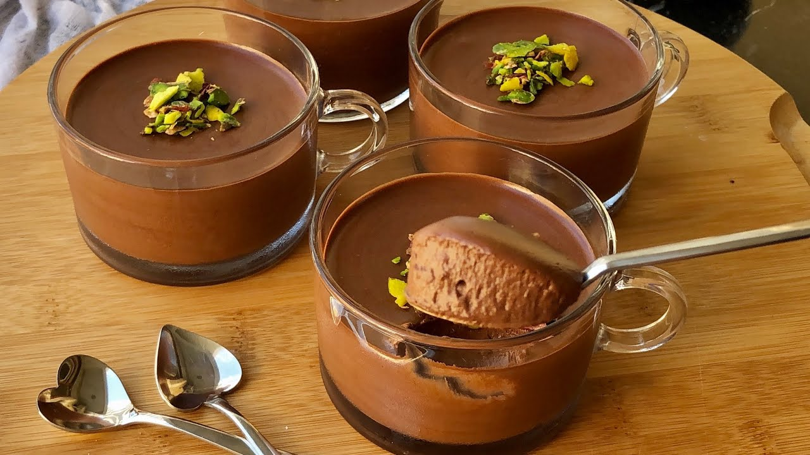

Çikolatalı Mus Tarifi için Malzemeler
- 3 Yumurta Sarısı
- 100 gr Bitter Çikolata
- 50 gr Şeker
- 100 gr Krema
Çikolatalı mus fransız mutfağının dünyaca ünlü tatlısıdır. Ünlü restoranların menülerinin vazgeçilmezi olan bu tatlı az malzeme
içeren çikolatanın tadının en köpüksü hali.
Tarif: Onur Demircan
Kaç Kişilik : 3 Hazırlama Süresi : 15 dk